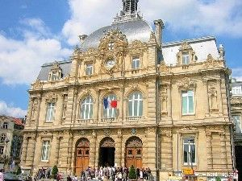

La ville de Tourcoing

Tourcoing bénéficie d’une situation géographique exceptionnelle. Située au cœur de la Métropole Lilloise qui compte plus de 1,8 Millions d’habitants avec son versant belge, notre ville est la troisième de la région Nord/ Pas-de-Calais en terme de population.
Riche d’un passé industriel textile et tourné vers la vente par correspondance, Tourcoing investit aujourd’hui dans des secteurs d’avenir comme l’industrie graphique et l’audiovisuel. Ils créent une véritable synergie autour des secteurs traditionnels et permettront à Tourcoing de franchir le cap du 21ème siècle : la Zone de l’Union, située sur les territoires de Tourcoing et Roubaix constitue une étape de plus vers cette reconversion économique.
Tourcoing investit également dans son cadre de vie et possède l’une des ZPPAUP les plus importantes de France (Zone de Protection du Patrimoine Architectural Urbain et Paysager). Elle s’est engagée dans une politique requalifiante et le secteur immobilier y est extrêmement dynamique comme vous pourrez le constater lors de votre visite. Des friches industrielles sont reconverties en lofts et logements de haute qualité. Tourcoing s’est également engagé dans une restructuration urbaine à grande échelle afin de poursuivre la recherche d’attractivité (ZAC hypercentre, ZAC Botanique, création d’un boulevard intérieur, et poursuite du Boulevard périphérique).
Les lieux culturels sont accessibles à tous, tout comme la pratique d’une activité culturelle ou artistique. Théâtre, danse, musique, arts plastiques… les possibilités ne manquent pas.
Pour en savoir plus :